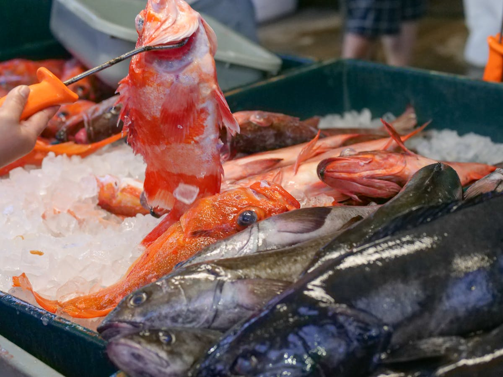
바다에서 카운터까지,
여섯 시간의 여정
매일 새벽, 제주 모슬포와 부산 자갈치에서 올라온 활어가
셰프의 손끝에서 하나의 코스로 완성됩니다.
냉동 없이, 그날의 바다를 그대로.
여덟 접시의 여정
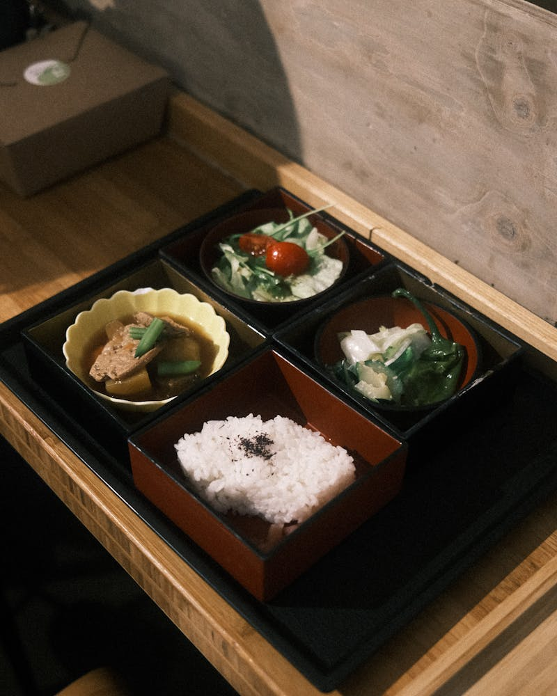
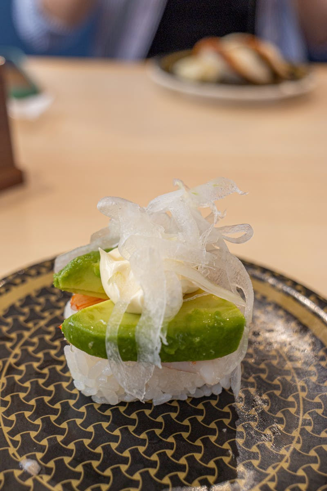
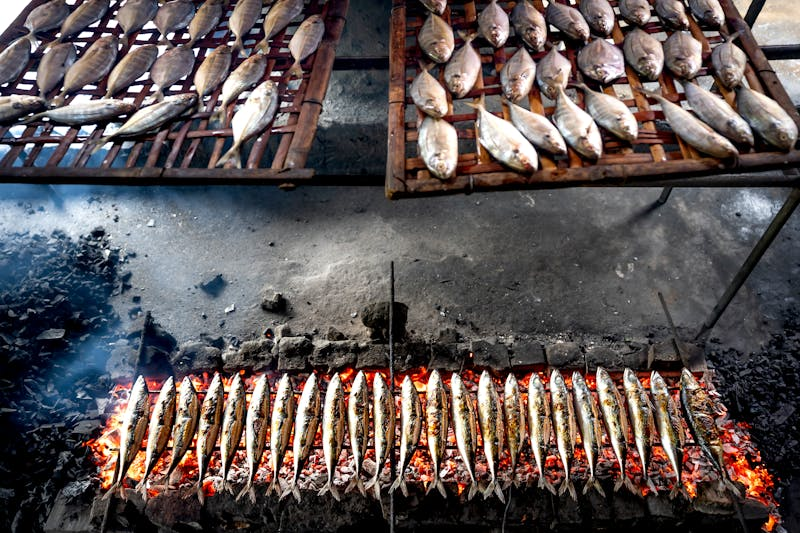
그날 아침 도착한 제철 재료로 시작하는 첫 인사. 섬세한 향과 온도로 입맛을 깨웁니다. 작은 그릇 안에 계절의 서사가 담깁니다.
가쓰오부시와 다시마로 이틀간 우린 다시. 투명한 국물 안에 기술과 시간이 응축됩니다.
당일 경매로 들어온 활어를 즉석에서 손질합니다. 숙성과 날것 사이, 최적의 순간을 찾습니다.
비장탄 숯불 위에서 껍질은 바삭하게, 속은 촉촉하게. 불의 온도와 시간을 읽는 감각.
체온으로 따뜻해진 샤리 위에 숙성된 네타를. 입 안에서 흩어지는 순간을 위한 8가지 니기리.
교토 말차와 제주 감귤. 코스의 마지막은 은은한 단맛으로 마무리합니다.
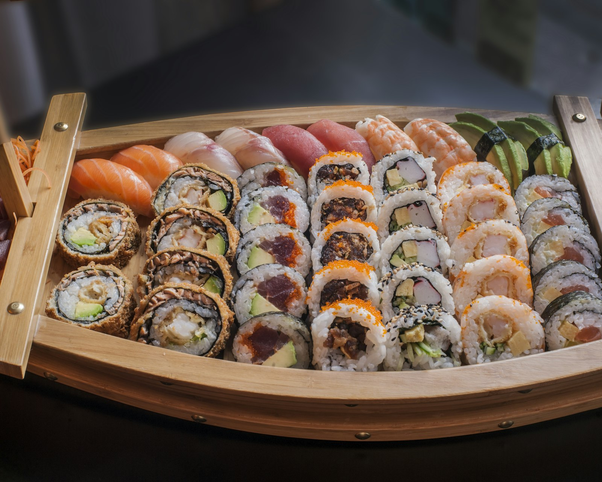
"맡기겠습니다"
お任せ — 셰프에게 오늘을 맡기는 신뢰의 한마디
사계, 네 번의 코스
봄, 도미와 죽순
벚꽃이 지는 계절, 산란 전 살이 오른 도미와
갓 올라온 죽순이 봄의 시작을 알립니다.
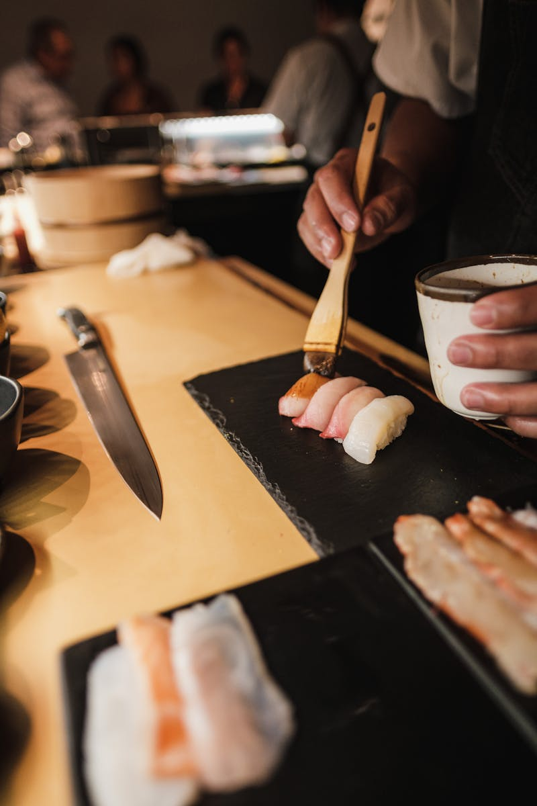
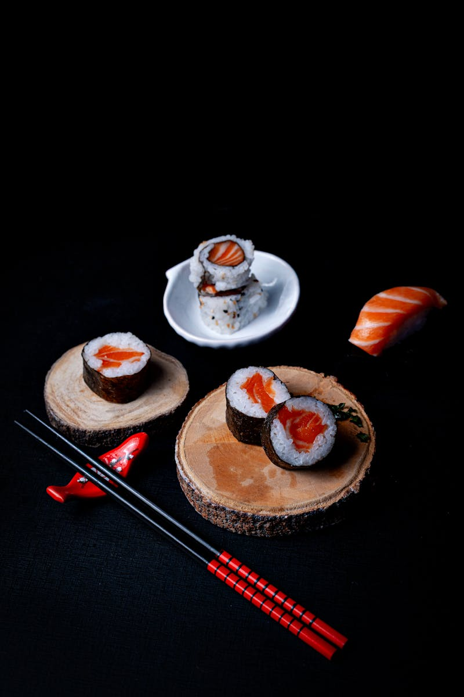
가을, 꽁치와 송이
지방이 오른 꽁치를 숯불에 굽고,
송이의 향을 국물에 녹입니다.
여름, 전복과 성게
제주 해녀가 건져 올린 전복,
자연산 보라 성게의 농밀한 단맛.
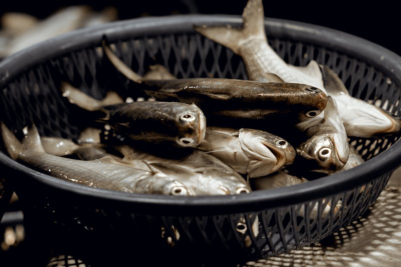
겨울, 방어와 대게
한류를 타고 살이 꽉 찬 방어,
눈의 계절이 선물하는 감칠맛.
고요 속에
집중하는 공간
요시노 히노키 원목 카운터 위로 셰프의 손놀림이 펼쳐집니다. 12석의 거리감은 대화를 허락하되, 집중을 방해하지 않습니다.


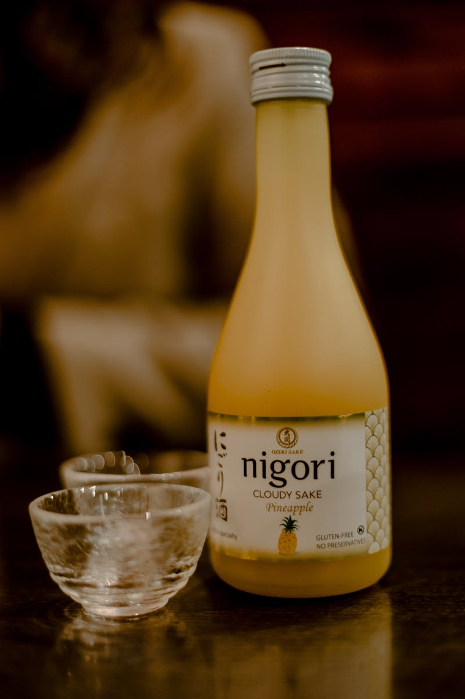
이준호 셰프
도쿄 긴자 스즈키에서 8년, 교토 키쿠노이에서 3년.
에도마에 전통 위에 한국 제철 식재료의 서사를 더합니다.
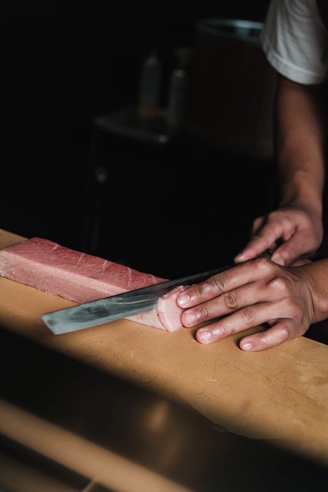
한 잔의 완성
다사이 23
Junmai Daiginjo
23%까지 정미한 극한의 깨끗함. 사시미의 섬세한 맛을 방해하지 않습니다.
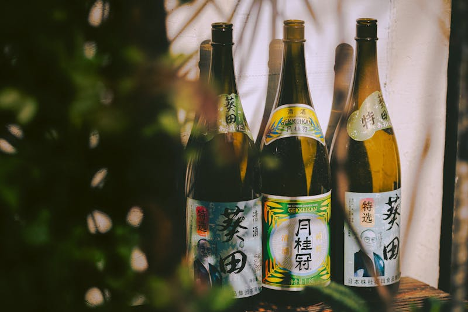
조유센
Tokubetsu Honjozo
따뜻하게 데워 마시는 혼조조. 야키모노의 감칠맛과 어울립니다.
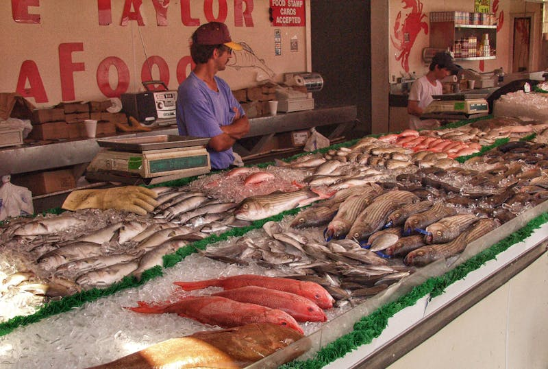
큐보타 만주
Junmai Daiginjo
신선한 과일향과 깔끔한 피니시. 니기리 코스의 동반자.
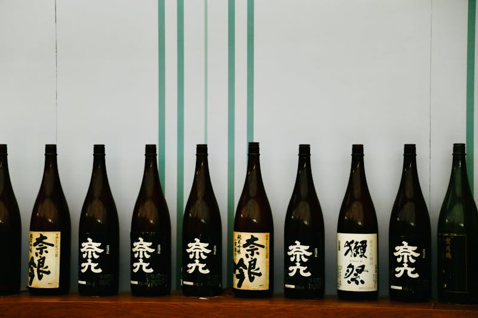
하쿠라쿠세이
Tokubetsu Junmai
미야기현의 청량한 물맛. 디저트 전 마지막 한 잔으로 추천합니다.
예약 안내
전화 예약
02-547-0892
전화 예약 우선 · 당일 예약 불가
최소 3일 전 예약을 권장합니다
영업 시간
오시는 길
서울특별시 강남구 청담동 89-12 지하1층
청담역 1번 출구 도보 5분
발렛파킹 가능